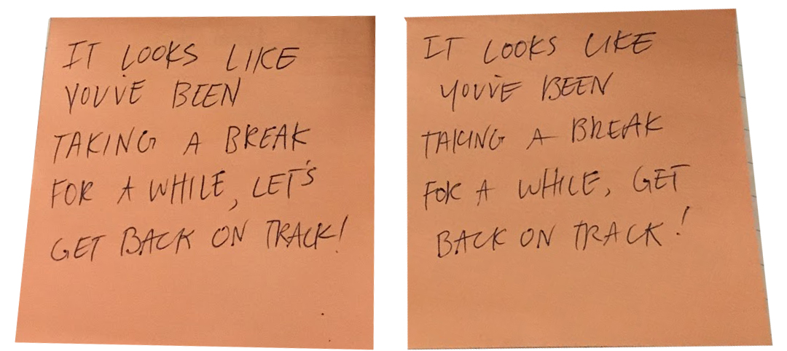

UI DESIGN | UX DESIGN
In today’s world where technology has maintained our constant attention, it can be rather difficult trying to focus on relevant tasks with the constant buzz of mindless media on our technology.
A phone OS feature, Focus Mode, to help redirect attention back to the original responsibilities.
I worked on the team as the UX developer and helped to create prototypes for users to test. My focus was on the visual aspect of the prototypes.
Tools: Adobe Illustrator, Photoshop, Wireframe.cc
Skills: user research, storyboarding, wireframing, prototyping
Teammates: Angela Camodeca, Austin Mahler, Christal Vo, Kimberly Vong, Maxim Chen
Needfinding:
My entire team and I went through the process of interviewing different individuals and sending out surveys to relevant demographics to collect some information. We went through rounds of interviews along the project to have a stream of engagement with our stakeholders.
After our initial rounds of research, we created an affinity diagram to organize the array of information and from there, has a wall walk activity to narrow our scope down to students in the classroom and work environment. We focused our design problem on how their interactions with phones affected their abilities to focus.
Main Takeaways from the Wall Walk
Creating the Story
Social media is engineered to be addictive and alluring. So it would not be much of a surprise that users are constantly on their phones checking and refreshing constantly for notifications and updates. Even when not in use, social media apps are capable of sending push notifications which alert the users and draw them back into the cycle.
To fight the use of social media is extremely difficult and not feasible within our given time frame. Yet, social media correlated heavily with the productivity levels of our interviewees. So we came to the compromise of introducing an alert-system feature that would notify users when they spent an exuberant amount of time on their devices. If you can’t beat them, then you can at least tell others to be cautious of them!
We created a storyboard discusses the user narrative and how our idea can help mitigate their problem. In the beginning, we thought that keeping track of a user’s schedule would be the best way to alert them when they are off track. Eventually, this design feature would evolve as we made iterations.
We created some of the personas we created exemplify the kind of users who are affected by excessive social media use and what consequences that occur directly or indirectly from usage.
We did rapid prototypes to get a feel on what worked and what did not and eventually came up with some wireframes for user testing.
Prototype 1: To gain instant feedback, we used sticky notes, one with cn authoritative message and another with a collaborative message, to notify whenever people would get off track and direct attention to their phones. 
Prototype 2: Our paper prototypes were a step up from the previous iteration. Users could access the Focus Mode through settings.
We tested our users through a trial by presenting the notification screens whenever they were distracted by their phones. Then we asked them to walk through and asked them questions on what they thought.
Main Malfunctions:
Though most of the feedback was positive, some users gave their thoughts on what features they liked and what they wished were present.
The notifications themselves, ironically, would get too distracting if too frequent. Being able to turn them off completely would alleviate the nuisance it causes.
Having a noticeable interface design to passively remind the user that the mode is on helps them “remember” that they have other priorities.
Though we liked our concept, it is only limited to the iPhone’s iOS but ideally it would be a feature available on other phone operating systems. I am grateful that I found a team that really wanted to achieve a finessed project. Without the efforts of everybody, we would not have created a product that felt like an accomplishment.
{kind=link}
{kind=link}
{kind=link}
{kind=link}
{kind=link}
{kind=link}
{kind=link}
{kind=link}
{kind=link}
{kind=link}